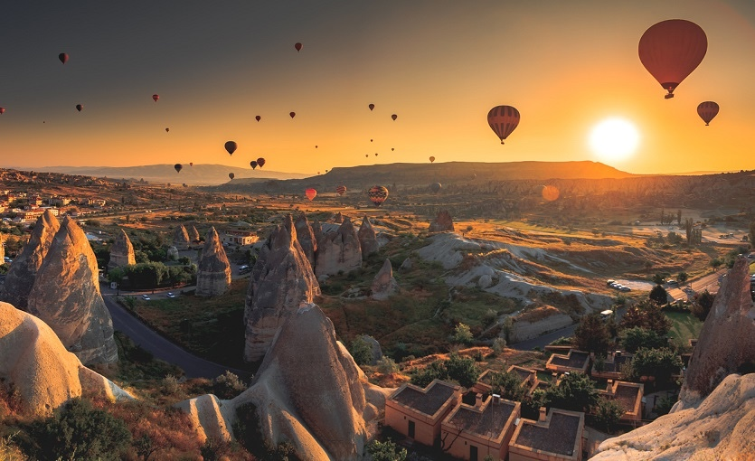
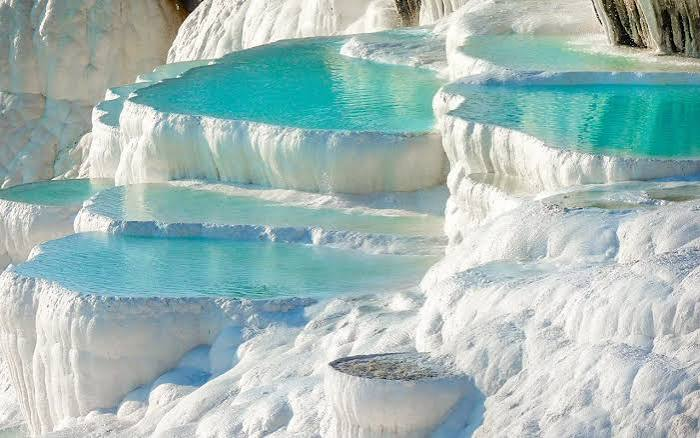

Cappadocia: Fairy Chimneys and Hot Air Balloons
Cappodocia is famous for its unique rock formations, hictoric cave dwellings, and sunrise hot air balloons in Central Anatolia

Cappodocia is famous for its unique rock formations, hictoric cave dwellings, and sunrise hot air balloons in Central Anatolia

Pamukkale features terraces of carbonate minerals left by the following water of thermal springs, located in southwestern Türkiye
